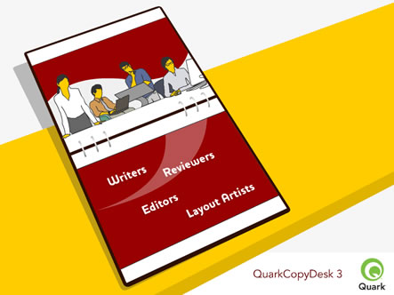

|
|||||||
|
|||||||
Como funciona? 1 - No QuarkXPress, o designer concebe uma página, contendo um artigo com os atributos específicos de texto e de espaçamento. 2 - O designer faz um “Save As” e escolhe ficheiros do tipo QuarkCopyDesk. 3 - No QuarkCopyDesk, a equipa editorial abre o artigo e dispõem da opção de visualizar o artigo com a geometria com que foi criad, para que possa ser escrito, editado e aprovado o texto. 4 - O escritor ou o editor grava o artigo, no fim de ter terminado o trabalho. 5 - No QuarkXPress, o designer importa o resultado final do QuarkCopyDesk, para o design do QuarkXPress. O resultado final, encaixa perfeitamente sem necessitar ser reformatado. |
|||||||
|  | |||||||